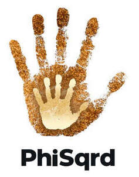

Trade Mark Journal No.2026/010 6 March 2026
UK00004334587 3 February 2026 (9,14,16,18,25,28,35,36,38,41,42,44,45)

- Class 9
- Computer software, application software, mobile application software and artificial intelligence software, downloadable audio, video and audio visual recordings, downloadable electronic publications, downloadable digital media, multimedia files and audio files, all in the field of behavioural education, mental health, self improvement, self fulfilment, self awareness, social emotional learning, personal, social and emotional development, mental and emotional wellness, mental and emotional wellbeing, emotional regulation, emotional resilience, emotional intelligence, strategies, tools and problem solving skills to manage feelings and behaviours, mindfulness, stress management, positivity, positive mindset, friendship, social values, empowerment, encouraging kindness, celebrating meaningful experiences and moments, inspiring personal growth, promoting a secure and respectful online space, fostering thoughtful and meaningful interactions, bringing joy and positivity to the community, education and educational training; Mobile application software and artificial intelligence software for social networking; Software for editing, modifying, uploading, downloading, accessing, viewing, posting, displaying, tagging, blogging, streaming, transmitting, sharing, linking, annotating, indicating sentiment about, commenting on, embedding, transmitting and sharing or otherwise providing images, audio visual and video content, text, data, photographs, messages, comments, information, electronic media or information via computer, the internet and communication networks.
- Class 14
- Earrings, rings, bracelets, necklaces, charms, jewellery chains, pendants, anklets; Key rings; Key fobs; Key chains; Key pendants; Key charms; Watch straps.
- Class 16
- Stationery; Calendars; Canvas for painting; Paint brushes; Pencils; Pens; Felt tip pens; Marker pens; Colouring pads; Notebooks; Sketch pads; drawing pads; Paper; art paper; watercolour paper; Drawing materials; artists’ pastels and charcoal; Adhesive materials for stationery; Art sets comprising paper, pencils, paints and brushes; Craft paper and craft materials for art purposes.
- Class 18
- Bags, tote bags, duffle bags, toiletry bags, canvas bags.
- Class 25
- Clothing, headgear and footwear.
- Class 28
- Yoga accessories; Pilates rings; Pilates resistance bands; Pilate balls; Foam rollers; Skipping ropes; Weighted balls; Acupressure cushions; Balance boards; Fitness accessories for stretching and strength training. .
- Class 35
- Advertising and marketing services, digital marketing services, online advertising services, social media marketing services, content marketing services, influencer marketing services, promotion of goods and services through online media, social media platforms, websites and mobile applications, business marketing consultancy relating to digital and social media advertising, all in the field of behavioural education, mental health, self improvement, self fulfilment, self awareness, social emotional learning, personal, social and emotional development, mental and emotional wellness, mental and emotional wellbeing, emotional regulation, emotional resilience, emotional intelligence, strategies, tools and problem solving skills to manage feelings and behaviours, mindfulness, stress management, positivity, positive mindset, friendship, social values, empowerment, encouraging kindness, celebrating meaningful experiences and moments, inspiring personal growth, promoting a secure and respectful online space, fostering thoughtful and meaningful interactions, bringing joy and positivity to the community, education and educational training.
- Class 36
- Charitable fundraising; Arranging charitable fundraising.
- Class 38
- Providing online chat rooms and forums, weblogs, instant messaging services, and electronic bulletin boards for social networking; Providing an online community forum for users to share and stream information, audio, video, entertainment content and information to form virtual communities, and to engage in social networking; Providing access to online community platforms for wellbeing related content; Streaming, live streaming and electronic transmission of images, audio-visual and video content, photographs, videos, data, text, messages and information via the internet.
- Class 41
- Education services, training services, entertainment services, consultancy and advisory services, and provision of information relating to education, training and entertainment, consultancy and advisory services and provision of information relating to education, training and entertainment, electronic publishing services for others, providing a website featuring non downloadable publications, providing a website that enables users to subscribe to coaching, mentoring and/or educational services all in the field of behavioural education, mental health, self improvement, self fulfilment, self awareness, social emotional learning, personal, social and emotional development, mental and emotional wellness, mental and emotional wellbeing, emotional regulation, emotional resilience, emotional intelligence, strategies, tools and problem solving skills to manage feelings and behaviours, mindfulness, stress management, positivity, positive mindset, friendship, social values, empowerment, encouraging kindness, celebrating meaningful experiences and moments, inspiring personal growth, promoting a secure and respectful online space, fostering thoughtful and meaningful interactions, bringing joy and positivity to the community, education and educational training.
- Class 42
- Providing on line non downloadable software, software as a service (SAAS) services, platform as a service (PAAS) services, and application service provider (ASP) services, all in the field of behavioural education, mental health, self improvement, self fulfilment, self awareness, social emotional learning, personal, social and emotional development, mental and emotional wellness, mental and emotional wellbeing, emotional regulation, emotional resilience, emotional intelligence, strategies, tools and problem solving skills to manage feelings and behaviours, mindfulness, stress management, positivity, positive mindset, friendship, social values, empowerment, encouraging kindness, celebrating meaningful experiences and moments, inspiring personal growth, promoting a secure and respectful online space, fostering thoughtful and meaningful interactions, bringing joy and positivity to the community, education and educational training; Providing on line non downloadable software, software as a service (SAAS) services, platform as a service (PAAS) services, and application service provider (ASP) services, all featuring software for social networking, managing social networking content, creating and maintaining an online presence for individuals, creating a virtual community, interacting with online communities, electronic messaging, editing, modifying, uploading, downloading, accessing, viewing, posting, displaying, tagging, blogging, streaming, transmitting, sharing, linking, annotating, indicating sentiment about, commenting on, embedding, transmitting and sharing or otherwise providing images, audio visual and video content, text, data, photographs, messages, comments, information, electronic media or information via computer, the internet and communication networks; Providing on line non downloadable software, software as a service (SAAS) services, platform as a service (PAAS) services, and application service provider (ASP) services featuring computer software for artificial intelligence all in the field of behavioural education, mental health, self improvement and self fulfilment; Providing online facilities that give users the ability to engage in social networking and manage their social networking content all in the field of behavioural education, mental health, self improvement and self fulfilment; Providing search engines for obtaining data via the internet and communications networks all in the field of behavioural education, mental health, self improvement and self fulfilment; Research in the field of behavioural wellbeing, mental health, self improvement, self fulfilment, self awareness, social emotional learning, personal, social and emotional development, mental wellness, mental wellbeing, emotional regulation, emotional resilience, emotional intelligence, strategies, tools and problem solving skills to manage feelings and behaviours, mindfulness, stress management, mental positivity, positive mindset, friendship, social values, empowerment, encouraging kindness, celebrating meaningful experiences and moments, inspiring personal growth, promoting a secure and respectful online space, fostering thoughtful and meaningful interactions, bringing joy and positivity to the community.
- Class 44
- Advisory and consultancy services, and the provision of information relating to wellbeing [health], personal welfare [health], behavioural problems, behavioural wellbeing, mental health, self improvement, self fulfilment, self awareness, mental wellness, mental wellbeing, mindfulness, stress management, mental positivity and positive mindset; All the aforementioned excluding medical care, psychological counselling, and the prevention, detection or treatment of mental health conditions.
- Class 45
- Advisory and consultancy services, and the provision of information relating to emotional and inter personal relationships, behavioural education, self improvement, self fulfilment, self awareness, social emotional learning, personal, social and emotional development, emotional wellness, emotional wellbeing, emotional regulation, emotional resilience, emotional intelligence, mindfulness, stress management, positivity, positive mindset, friendship, social values, empowerment, encouraging kindness, celebrating meaningful experiences and moments, inspiring personal growth, promoting a secure and respectful online space, fostering thoughtful and meaningful interactions, bringing joy and positivity to the community; Advisory and consultancy services, and the provision of information relating to charitable, philanthropic, volunteer, public and community services, and humanitarian activities; Managing social networking content; Creating and maintaining an online presence for individuals, creating a virtual community, interacting with online communities, electronic messaging, all in the field of behavioural education, mental health, self improvement and self fulfilment.
The Buddyhood Platforms Ltd
Representative: Howard Kennedy LLP